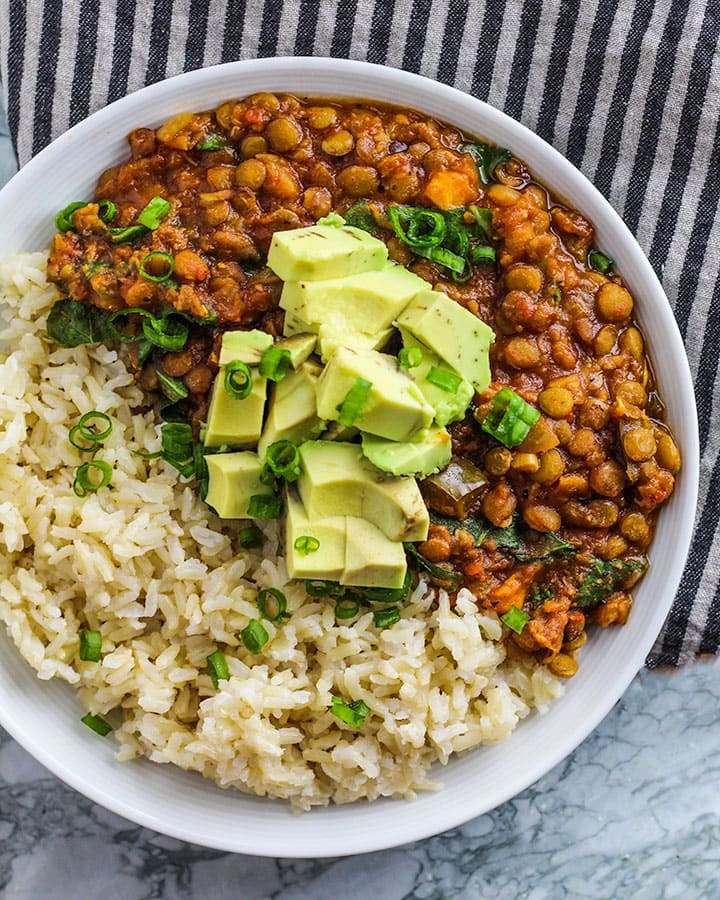

Lentils

Description
This is probably one of my favourite go to staples. Paired with rice and a veggie side of your choice makes this meal complete
Ingredients
- Lentils
- Garlic
- Cilantro or Shadon Beni
- Ginger
- Tomato Sauce
- Salt
Preparation
- Sortey garlic in oil of choice
- Add 2 cups of water to pot
- Add 1 cup of lentils to pot
- Bring to boil
- Add salt as desired
- add 1 tbps of tomato Sauce
- add 1/2 tsp of Ginger
- when lentils are almost ready, add Cilantro
- simmer til water evaporates to desired